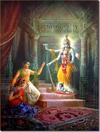

shree krishna bhagwan

Krishna was the eighth son of Devaki and Vasudeva and the foster-son of Yashoda and Nanda. A frequently worshipped deity in Hinduism, he is the hero of various legends, particularly the Kansa-vadha and Mahabharata and embodies several qualities such as love, duty, compassion, and playfulness. Krishna's birthday is celebrated every year by Hindus on Krishna Janmashtami according to the lunisolar Hindu calendar, which falls in late August or early September of the Gregorian calendar. Krishna is usually depicted with a flute in his hand. Krishna is also a central character in Mahabharata, Bhagavata Purana, and the Bhagavad Gita.
if you want to know more about krishna go on historyden.com's mahabharat page